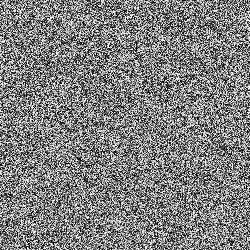

<!DOCTYPE html>
<html>
<head>
  <title>Zebra in de sneeuwstorm</title>

  <script src="https://unpkg.com/jspsych@8.2.2"></script>
  <script src="https://unpkg.com/fabric@7.1.0/dist/index.min.js"></script>

  <script src="https://unpkg.com/@jspsych/plugin-preload@2.1.0"></script>
  <script src="https://unpkg.com/@jspsych/plugin-call-function@2.1.0"></script>
  <script src="https://unpkg.com/@jspsych/plugin-html-button-response@2.1.0"></script>
  <script src="https://unpkg.com/@jspsych/plugin-html-keyboard-response@2.1.0"></script>
  <script src="https://unpkg.com/@jspsych/plugin-canvas-keyboard-response@1.1.3"></script>
  <script src="https://unpkg.com/@jspsych/plugin-survey-html-form@2.1.0"></script>

  <link href="https://unpkg.com/jspsych@8.2.2/css/jspsych.css" rel="stylesheet" type="text/css" />
  <style>
.jspsych-btn {
    display: inline-flex;
    flex-direction: column;
    align-items: center;
    gap: 0.2em;
    font-size: 30px;
    border: 10px solid transparent;
    border-radius: 16px;
    color: white;
    background-color: #2b00c8d0;
    padding: 0.6em 1.2em;
    /*font-family: Malington;*/
}
.jspsych-space-hint {
  display: block;
  margin-top: 6px;
  font-size: 14px;
  font-weight: 400;
  line-height: 1;
  color: #333333;
  text-align: center;
  pointer-events: none;
}
.jspsych-space-wrapper {
  display: inline-flex;
  flex-direction: column;
  align-items: center;
}
.jspsych-btn:hover {
  background-color: #2b00c8; 
  border-color: #2b00c8;
  color: white;
}
.jspsych-btn:disabled {
  background-color: #2b00c800;
  color: #aaaaaa00;
  border-color: #d13d3d00;
  cursor:auto;
}
</style>
</head>
<body></body>

<script>
// instellingen
  const subject_id = Math.random().toString(36).substring(2, 12);
  const filename = `${subject_id}.csv`;

  // Start jsPsych and save the collected data locally when the experiment ends.
  const jsPsych = initJsPsych({
    on_finish: () => {
      jsPsych.data.get().localSave('csv', filename);
    }
  });

  // Shared selectors for continue buttons and buttons that should show a <spatie> hint.
  const continue_button_selector = 'button.jspsych-btn:not([disabled]), input.jspsych-btn[type="button"]:not([disabled]), input.jspsych-btn[type="submit"]:not([disabled]), input[type="submit"]:not([disabled])';
  const space_hint_button_selector = 'button.jspsych-btn, input.jspsych-btn[type="button"], input.jspsych-btn[type="submit"], input[type="submit"]';

  // Find the current continue button so Space can trigger it.
  function getContinueButton() {
    return document.querySelector(continue_button_selector);
  }

  // Check whether an element is a button that should receive the visible <spatie> hint.
  function isSpaceHintTarget(element) {
    return element.matches(space_hint_button_selector);
  }

  // Wrap a button and add a small text hint underneath it.
  function addSpaceHintToButton(button) {
    const wrapper = document.createElement('div');
    wrapper.className = 'jspsych-space-wrapper';
    button.insertAdjacentElement('beforebegin', wrapper);
    wrapper.appendChild(button);

    const hint = document.createElement('div');
    hint.className = 'jspsych-space-hint';
    hint.textContent = '<spatie>';
    wrapper.appendChild(hint);
  }

  // Let participants press Space instead of clicking a visible continue button.
  document.addEventListener('keydown', function(event) {
    const active_element = document.activeElement;
    const active_tag = active_element ? active_element.tagName : '';
    const input_type = active_element && active_element.type ? active_element.type.toLowerCase() : '';
    const blocks_space_continue =
      active_tag === 'TEXTAREA' ||
      active_tag === 'SELECT' ||
      active_tag === 'BUTTON' ||
      (active_tag === 'INPUT' && !['radio', 'checkbox'].includes(input_type));
    const continue_button = getContinueButton();

    if (event.code === 'Space' && continue_button && !blocks_space_continue) {
      event.preventDefault();
      continue_button.click();
    }
  });

  // Add the <spatie> hint to any new buttons that jsPsych renders.
  function ensureSpaceHints() {
    const buttons = document.querySelectorAll(space_hint_button_selector);

    buttons.forEach((button) => {
      if (
        button.parentElement &&
        button.parentElement.classList.contains('jspsych-space-wrapper')
      ) {
        const existing_hint = button.parentElement.querySelector('.jspsych-space-hint');
        if (!existing_hint) {
          const hint = document.createElement('div');
          hint.className = 'jspsych-space-hint';
          hint.textContent = '<spatie>';
          button.parentElement.appendChild(hint);
        }
        return;
      }

      addSpaceHintToButton(button);
    });
  }

  // Watch for new DOM nodes so hints are added automatically on newly rendered screens.
  function setupSpaceHintObserver() {
    let update_scheduled = false;

    const scheduleHintUpdate = () => {
      if (update_scheduled) return;
      update_scheduled = true;
      window.requestAnimationFrame(() => {
        update_scheduled = false;
        ensureSpaceHints();
      });
    };

    const observer = new MutationObserver((mutation_list) => {
      const should_update = mutation_list.some((mutation) => {
        return [...mutation.addedNodes].some((node) => {
          if (!(node instanceof HTMLElement)) return false;
          if (node.classList.contains('jspsych-space-hint')) return false;
          if (node.classList.contains('jspsych-space-wrapper')) return false;
          return isSpaceHintTarget(node) || !!node.querySelector?.(space_hint_button_selector);
        });
      });

      if (should_update) {
        scheduleHintUpdate();
      }
    });

    observer.observe(document.body, {
      childList: true,
      subtree: true
    });

    scheduleHintUpdate();
  }

  if (document.readyState === 'loading') {
    window.addEventListener('DOMContentLoaded', setupSpaceHintObserver);
  } else {
    setupSpaceHintObserver();
  }

  // Randomize once per participant which stripe direction they imagine in both parts.
  const vividness_imagery_condition = jsPsych.randomization.sampleWithoutReplacement(['right', 'left'], 1)[0];

  // Save participant-level metadata once so it is attached to all later trials.
  jsPsych.data.addProperties({
    participantID: subject_id,
    filename: filename,
    experiment: "zebra_in_sneeuwstorm_gecombineerd",
    vividness_hidden_stimulus_opacity: 0.11,
    main_task_duration_ms: 180000,
    main_task_stimulus_opacity: 0.11,
    vividness_imagery_condition: vividness_imagery_condition
  });

  // Shared image and canvas settings used throughout the experiment.
  const canvas_size = [400, 400];
  const noise_imgs_dim = [250, 250];
  const gabor_img_dim = [250, 250];

  // Pre-create the noise images so the animated snowstorm trials render quickly.
  const noise_files = [];
  const fabric_noise_imgs = [];

  for (let i = 0; i < 50; i++) {
    const img_src = `imgs/rand_noise_${i}.png`;
    noise_files.push(img_src);

    const img = new Image();
    img.src = img_src;

    const fabric_img = new fabric.Image(img, {
      left: 0,
      top: 0,
      width: noise_imgs_dim[0],
      height: noise_imgs_dim[1],
      originX: 'left',
      originY: 'top'
    });

    fabric_img.scaleToWidth(canvas_size[0]);
    fabric_noise_imgs.push(fabric_img);
  }

  // The left and right gabor images represent the stripe directions.
  const gabor_left_img = new Image();
  gabor_left_img.src = 'imgs/gabor_left.png';

  const gabor_right_img = new Image();
  gabor_right_img.src = 'imgs/gabor_right.png';

  function getGaborFile(orientation) {
    return orientation === 'left' ? 'imgs/gabor_left.png' : 'imgs/gabor_right.png';
  }

  function getGaborImageObject(orientation) {
    return orientation === 'left' ? gabor_left_img : gabor_right_img;
  }

  function makeFabricGabor(imageObj, opacity) {
    const gabor = new fabric.Image(imageObj, {
      left: canvas_size[0] / 2,
      top: canvas_size[1] / 2,
      width: gabor_img_dim[0],
      height: gabor_img_dim[1],
      opacity: opacity,
      originX: 'center',
      originY: 'center'
    });
    gabor.scaleToWidth(canvas_size[0]);
    return gabor;
  }

  // Preload all image assets before the experiment starts.
  const preload = {
    type: jsPsychPreload,
    images: [...noise_files, 'imgs/gabor_left.png', 'imgs/gabor_right.png', 'imgs/Lieke.png'],
    save_trial_parameters: {
      images: false
    }
  };


  // HULPFUNCTIES VOOR UITLEG
 

  function zebraLabel(orientation) {
    return orientation === 'left' ? 'LINKS' : 'RECHTS';
  }

  function zebraName(orientation) {
    return orientation === 'left' ? 'Lieke' : 'Rick';
  }

  function oppositeOrientation(orientation) {
    return orientation === 'left' ? 'right' : 'left';
  }

  // Render the zebra image for the correct direction; right-facing is a mirrored Lieke image.
  function zebraImageHTML(orientation, width = 220) {
    const transform = orientation === 'right' ? 'scaleX(-1)' : 'scaleX(1)';
    const alt = zebraName(orientation);
    const height = Math.round(width * 0.85);
    return `
      
    `;
  }

  // static snow image
  function snowstormImageHTML(width = 260) {
    return `
      
    `;
  }

  // Fake button 
  function arrowContinueHTML(label) {
    return `
      <div style="margin-top:22px; display:flex; justify-content:center;">
        <div class="jspsych-btn" style="pointer-events:none;">
          ${label}
        </div>
      </div>
    `;
  }

 
  // DEMOGRAFIE

  const demographics = {
    type: jsPsychSurveyHtmlForm,
    preamble: `
      <div style="max-width:700px; margin:0 auto; text-align:center;">
        <p style="font-size:24px;"><strong>Eerst twee korte vragen</strong></p>
      </div>
    `,
    html: `
      <div style="max-width:500px; margin:20px auto; text-align:left; font-size:18px;">
        <p>
          Hoe oud ben je?<br>
          <input type="number" name="age" min="5" max="100" required style="font-size:18px; padding:6px; width:120px;">
        </p>

        <p>
          Wat is je geslacht?<br>
          <label><input type="radio" name="gender" value="male" required> Jongen / man</label><br>
          <label><input type="radio" name="gender" value="female" required> Meisje / vrouw</label><br>
          <label><input type="radio" name="gender" value="other" required> Anders</label>
        </p>
      </div>
    `,
    button_label: "Verder",
    save_trial_parameters: {
      preamble: false,
      html: false,
      button_label: false
    },
    data: {
      phase: "demographics"
    },
    on_finish: function(data) {
      const response = data.response;
      data.age = Number(response.age);
      data.gender = response.gender;

      jsPsych.data.addProperties({
        age: Number(response.age),
        gender: response.gender
      });
    }
  };

//zebraverhaal
  const zebra_intro = {
    type: jsPsychHtmlButtonResponse,
    stimulus: `
      <div style="max-width:900px; margin:0 auto; text-align:center;">
        <p style="font-size:26px;"><strong>Welkom bij het zebra-spel</strong></p>
        ${zebraImageHTML(vividness_imagery_condition, 280)}
        <p style="font-size:20px;">
          Dit is zebra <strong>${zebraName(vividness_imagery_condition)}</strong>.
        </p>
        <p style="font-size:20px;">
          De strepen van ${zebraName(vividness_imagery_condition)} lopen naar <strong>${zebraLabel(vividness_imagery_condition)}</strong>.
        </p>
      </div>
    `,
    choices: ['Begin'],
    save_trial_parameters: {
      stimulus: false,
      choices: false
    },
    data: {
      phase: 'zebra_intro'
    }
  };

  const snowstorm_intro = {
    type: jsPsychHtmlButtonResponse,
    stimulus: `
      <div style="max-width:900px; margin:0 auto; text-align:center;">
        <p style="font-size:26px;"><strong>Straks zie je steeds een sneeuwstorm</strong></p>
        ${snowstormImageHTML(260)}
        <p style="font-size:20px;">
          In die sneeuwstorm is het vaak moeilijk om iets goed te zien.
        </p>
        <p style="font-size:20px;">
          Daarom is het jouw taak om straks steeds de <strong>strepen</strong> van ${zebraName(vividness_imagery_condition)} in te beelden.
        </p>
      </div>
    `,
    choices: ['Verder'],
    save_trial_parameters: {
      stimulus: false,
      choices: false
    },
    data: {
      phase: 'snowstorm_intro'
    }
  };

  const stripes_intro = {
    type: jsPsychHtmlButtonResponse,
    stimulus: `
      <div style="max-width:900px; margin:0 auto; text-align:center;">
        <p style="font-size:26px;"><strong>Dit zijn de strepen die je moet inbeelden</strong></p>
        
        <p style="font-size:20px;">
          Dit plaatje laat een klein stukje van de strepen van ${zebraName(vividness_imagery_condition)} zien.
        </p>
        <p style="font-size:20px;">
          Als je straks de sneeuwstorm ziet, probeer dan precies deze <strong>strepen</strong> zo goed mogelijk in je hoofd te zien.
        </p>
      </div>
    `,
    choices: ['Verder'],
    save_trial_parameters: {
      stimulus: false,
      choices: false
    },
    data: {
      phase: 'stripes_intro'
    }
  };

//deel 1

  const vividness_single_frame_duration = 100;
  const vividness_noise_duration = 2000;
  const hidden_stimulus_trial_index = 6;
  const total_vividness_trials = 6;
  const hidden_stimulus_opacity = 0.11;
  const vividness_opacities = [0, 0.28, 0.44, 0.60, 0.78];
  // Reminder screen shown before each vividness trial.
  function make_vividness_instruction_trial(trial_index, orientation) {
    const title_text = trial_index === 1
      ? 'Zo meteen komt de eerste sneeuwstorm.'
      : 'Er komt weer een sneeuwstorm.';
    const prompt_text = trial_index === 1
      ? `Probeer dan zo goed mogelijk de <strong>strepen</strong> van ${zebraName(orientation)} in te beelden.`
      : `Beeld opnieuw zo goed mogelijk de <strong>strepen</strong> van ${zebraName(orientation)} in.`;

    return {
      type: jsPsychHtmlButtonResponse,
      stimulus: `
        <div style="max-width:850px; margin:0 auto; text-align:center;">
          <p style="font-size:24px;">${title_text}</p>
          <p style="font-size:21px;">
            ${prompt_text}
          </p>
          <p style="font-size:21px;">
            Kijk nog even goed naar dit stukje van de strepen:
          </p>
          <div style="margin:16px 0;">
            
          </div>
          <p style="font-size:18px; margin-top:18px;">
            Klik op <strong>Verder</strong> om door te gaan.
          </p>
        </div>
      `,
      choices: ['Verder'],
      save_trial_parameters: {
        stimulus: false,
        choices: false
      },
      data: {
        phase: "vividness_instruction",
        vividness_trial_index: trial_index,
        imagined_tilt: orientation
      }
    };
  }

  function make_vividness_noise_trial(trial_index, orientation, show_hidden_stimulus = false) {
    let interval_ID;

    return {
      type: jsPsychCanvasKeyboardResponse,
      canvas_size: canvas_size,
      trial_duration: vividness_noise_duration,
      choices: "NO_KEYS",
      save_trial_parameters: {
        stimulus: false,
        choices: false,
        canvas_size: false
      },
      stimulus: function() {
        const shuffled_noise = jsPsych.randomization.shuffle([...fabric_noise_imgs]);
        const canvas = new fabric.StaticCanvas("jspsych-canvas-stimulus", {
          backgroundColor: 'white'
        });

        const gabor_image_obj = getGaborImageObject(orientation);
        const hidden_gabor = makeFabricGabor(gabor_image_obj, hidden_stimulus_opacity);

        let nth_frame = 0;

        interval_ID = setInterval(() => {
          canvas.remove(...canvas.getObjects());
          canvas.add(shuffled_noise[nth_frame]);

          if (show_hidden_stimulus) {
            canvas.add(hidden_gabor);
          }

          canvas.renderAll();
          nth_frame = (nth_frame + 1) % shuffled_noise.length;
        }, vividness_single_frame_duration);
      },
      data: {
        phase: "vividness_noise",
        vividness_trial_index: trial_index,
        imagined_tilt: orientation,
        hidden_real_stimulus_present: show_hidden_stimulus ? 1 : 0,
        hidden_real_stimulus_opacity: show_hidden_stimulus ? hidden_stimulus_opacity : 0
      },
      on_finish: function() {
        clearInterval(interval_ID);
      }
    };
  }

  // Rating screen 
  function make_vividness_rating_trial(trial_index, orientation, show_hidden_stimulus = false) {
    const gabor_file = getGaborFile(orientation);

    return {
      type: jsPsychSurveyHtmlForm,
      preamble: `
        <div style="text-align:center; max-width:1000px; margin:0 auto;">
          <p style="font-size:24px;"><strong>Hoe duidelijk zag jij de strepen in je hoofd?</strong></p>
          <p style="font-size:18px;">Kies het plaatje dat er het meest op lijkt.</p>
        </div>
      `,
      html: `
        <div style="
          display:flex;
          justify-content:center;
          gap:20px;
          flex-wrap:wrap;
          max-width:1100px;
          margin:20px auto 0 auto;
        ">
          <label style="cursor:pointer; text-align:center;">
            <input type="radio" name="vividness" value="1" required>
            <div style="position:relative; width:140px; height:140px; margin-top:8px; border:2px solid #bbb; border-radius:8px; overflow:hidden; background-image:url('imgs/rand_noise_0.png'); background-size:cover;">
            </div>
            <div style="margin-top:8px; font-size:18px;">Helemaal niks</div>
          </label>

          <label style="cursor:pointer; text-align:center;">
            <input type="radio" name="vividness" value="2" required>
            <div style="position:relative; width:140px; height:140px; margin-top:8px; border:2px solid #bbb; border-radius:8px; overflow:hidden; background-image:url('imgs/rand_noise_0.png'); background-size:cover;">
              
            </div>
            <div style="margin-top:8px; font-size:18px;">Klein beetje</div>
          </label>

          <label style="cursor:pointer; text-align:center;">
            <input type="radio" name="vividness" value="3" required>
            <div style="position:relative; width:140px; height:140px; margin-top:8px; border:2px solid #bbb; border-radius:8px; overflow:hidden; background-image:url('imgs/rand_noise_0.png'); background-size:cover;">
              
            </div>
            <div style="margin-top:8px; font-size:18px;">Best goed</div>
          </label>

          <label style="cursor:pointer; text-align:center;">
            <input type="radio" name="vividness" value="4" required>
            <div style="position:relative; width:140px; height:140px; margin-top:8px; border:2px solid #bbb; border-radius:8px; overflow:hidden; background-image:url('imgs/rand_noise_0.png'); background-size:cover;">
              
            </div>
            <div style="margin-top:8px; font-size:18px;">Heel goed</div>
          </label>

          <label style="cursor:pointer; text-align:center;">
            <input type="radio" name="vividness" value="5" required>
            <div style="position:relative; width:140px; height:140px; margin-top:8px; border:2px solid #bbb; border-radius:8px; overflow:hidden; background-image:url('imgs/rand_noise_0.png'); background-size:cover;">
              
            </div>
            <div style="margin-top:8px; font-size:18px;">Super goed</div>
          </label>
        </div>
      `,
      button_label: "Verder",
      save_trial_parameters: {
        preamble: false,
        html: false,
        button_label: false
      },
      data: {
        phase: "vividness_rating",
        vividness_trial_index: trial_index,
        imagined_tilt: orientation,
        hidden_real_stimulus_present: show_hidden_stimulus ? 1 : 0
      },
      on_finish: function(data) {
        const response = data.response;
        data.vividness_rating = Number(response.vividness);
        data.selected_opacity = vividness_opacities[data.vividness_rating - 1];
      }
    };
  }

  // perky test
  const awareness_check = {
    type: jsPsychSurveyHtmlForm,
    preamble: `
      <div style="max-width:900px; margin:0 auto; text-align:center;">
        <p style="font-size:24px;"><strong>Nog één vraag</strong></p>
        <p style="font-size:20px;">Zag je bij het laatste rondje echt strepen in de sneeuw?</p>
      </div>
    `,
    html: `
      <div style="max-width:700px; margin:30px auto; text-align:left; font-size:18px;">
        <p>
          <label>
            <input type="radio" name="noticed_real_stimulus_last_trial" value="yes" required>
            Ja
          </label>
        </p>

        <p>
          <label>
            <input type="radio" name="noticed_real_stimulus_last_trial" value="no" required>
            Nee
          </label>
        </p>
      </div>
    `,
    button_label: "Verder",
    save_trial_parameters: {
      preamble: false,
      html: false,
      button_label: false
    },
    data: {
      phase: "awareness_check",
      actual_hidden_stimulus_trial: hidden_stimulus_trial_index
    },
    on_finish: function(data) {
      const response = data.response;
      data.noticed_real_stimulus_last_trial = response.noticed_real_stimulus_last_trial || "";
      data.correct_detection_last_trial =
        response.noticed_real_stimulus_last_trial === "yes" ? 1 : 0;
    }
  };

//DEEL 2
  // Timing and state variables
  let dynamic_noise_duration = 3000;
  let single_frame_duration = 100;
  let inter_trial_interval = 800;
  const total_task_duration = 3 * 60 * 1000;

  let main_task_start_time = null;
  let running_trial_number = 0;
  let current_external_condition = null;

  const target_opacity = 0.11;

  // experiment's response labels.
  function key_to_response(key_press) {
    if (key_press === 'ArrowLeft') return 'left';
    if (key_press === 'ArrowRight') return 'right';
    if (key_press === 'ArrowUp' || key_press === 'ArrowDown') return 'absent';
    return 'no_response';
  }

  //  correct answer
  function get_correct_response_label(external_condition) {
    if (external_condition === 'left') return 'left';
    if (external_condition === 'right') return 'right';
    if (external_condition === 'absent') return 'absent';
    return 'undefined';
  }

  function get_congruency(imagery_condition, external_condition) {
    if (external_condition === 'absent') return 'absent_external';
    if (imagery_condition === external_condition) return 'congruent';
    return 'incongruent';
  }

  function sampleExternalCondition() {
    return jsPsych.randomization.sampleWithoutReplacement(['left', 'right', 'absent'], 1)[0];
  }

  // Keep the same imagined stripe direction in part 2 as in part 1.
  const global_imagery_condition = vividness_imagery_condition;

  const main_left_gabor = makeFabricGabor(gabor_left_img, 1);
  const main_right_gabor = makeFabricGabor(gabor_right_img, 1);

  function getMainTaskGabor(external_condition) {
    if (external_condition === 'left') return main_left_gabor;
    if (external_condition === 'right') return main_right_gabor;
    return null;
  }

  // Last transition screen
  function make_global_imagery_instruction(imagery_condition) {
    return {
      type: jsPsychHtmlButtonResponse,
      stimulus: `
      <div style="max-width:900px; margin:0 auto; text-align:center;">
        <p style="font-size:24px;"><strong>Nu begint het echte spel</strong></p>

          <div style="margin:10px 0 15px 0;">
            ${zebraImageHTML(imagery_condition, 230)}
          </div>

          <p style="font-size:20px;">
            Blijf tijdens alle volgende rondes de <strong>strepen</strong> naar ${zebraLabel(imagery_condition)} inbeelden.
          </p>

          <p style="font-size:20px;">
            Vanaf nu kan er soms ook <strong>echt een zebra</strong> in de sneeuwstorm staan.
          </p>

          <p style="font-size:20px;">
            Soms zie je die zebra echt een klein beetje.
            Soms ook niet.
          </p>

          <p style="font-size:20px;">
            Jij blijft dus de strepen inbeelden, maar kijkt ook goed welke kant de <strong>echte strepen</strong> op staan.
          </p>
        </div>
      `,
      choices: ['Verder'],
      data: {
        phase: 'global_imagery_instruction',
        imagery_condition: imagery_condition
      },
      save_trial_parameters: {
        stimulus: false,
        choices: false
      }
    };
  }

  // Shared snowstorm-response engine used by both practice trials and real trials.
  function makeSnowstormResponseTrial(config) {
    let interval_ID;
    let timestamp;
    let delta_times = [];
    let gabor_fabric_img = null;

    return {
      type: jsPsychCanvasKeyboardResponse,
      canvas_size: canvas_size,
      trial_duration: config.trial_duration,
      save_trial_parameters: {
        stimulus: false,
        choices: false,
        canvas_size: false
      },
      stimulus: function() {
        const external_condition = config.getExternalCondition();
        gabor_fabric_img = getMainTaskGabor(external_condition);

        let shuffled_noise_imgs = jsPsych.randomization.shuffle([...fabric_noise_imgs]);

        timestamp = performance.now();
        let canvas = new fabric.StaticCanvas("jspsych-canvas-stimulus", {
          backgroundColor: 'white',
          centeredScaling: true
        });

        let nth_frame = 0;

        interval_ID = setInterval(() => {
          canvas.remove(...canvas.getObjects());

          canvas.add(shuffled_noise_imgs[nth_frame]);
          nth_frame = (nth_frame + 1) % shuffled_noise_imgs.length;

          if (external_condition !== 'absent' && gabor_fabric_img !== null) {
            gabor_fabric_img.opacity = config.getGaborOpacity(external_condition);
            canvas.add(gabor_fabric_img);
          }

          canvas.renderAll();

          delta_times.push(Math.round(performance.now() - timestamp));
          timestamp = performance.now();
        }, single_frame_duration);
      },
      choices: ['ArrowLeft', 'ArrowDown', 'ArrowUp', 'ArrowRight'],
      response_ends_trial: true,
      data: config.data,
      on_finish: function(data) {
        clearInterval(interval_ID);

        data.frame_times = JSON.stringify(delta_times);
        data.n_recorded_frames = delta_times.length;
        data.response_label = key_to_response(data.response);
        data.correct = data.response_label === data.correct_response ? 1 : 0;
        if (typeof config.onFinishExtra === 'function') {
          config.onFinishExtra(data);
        }
      }
    };
  }

  // Real main-task trial
  function make_dynamic_trial(imagery_condition, gabor_opacity, noise_duration = null) {
    return makeSnowstormResponseTrial({
      trial_duration: noise_duration,
      getExternalCondition: function() {
        return current_external_condition;
      },
      getGaborOpacity: function(external_condition) {
        return external_condition === 'absent' ? 0 : gabor_opacity;
      },
      data: function() {
        return {
          phase: 'main_trial',
          trial_number: running_trial_number,
          imagery_condition: imagery_condition,
          external_condition: current_external_condition,
          gabor_opacity: current_external_condition === 'absent' ? 0 : gabor_opacity,
          correct_response: get_correct_response_label(current_external_condition),
          congruency: get_congruency(imagery_condition, current_external_condition),
          noise_duration: noise_duration,
          single_frame_duration: single_frame_duration
        };
      },
      onFinishExtra: function(data) {
        data.elapsed_main_task_time_ms = Math.round(performance.now() - main_task_start_time);
      }
    });
  }

  // fixation screen
  function make_trial_divider() {
    return {
      type: jsPsychHtmlKeyboardResponse,
      stimulus: "<div style='font-size:32px; text-align:center;'>+</div>",
      choices: "NO_KEYS",
      trial_duration: inter_trial_interval,
      save_trial_parameters: {
        stimulus: false,
        choices: false
      },
      data: function() {
        return {
          phase: 'trial_divider',
          upcoming_trial_number: running_trial_number
        };
      }
    };
  }

  // Reminder screen
  function make_main_task_reminder(imagery_condition) {
    return {
      type: jsPsychHtmlButtonResponse,
      stimulus: `
        <div style="max-width:900px; margin:0 auto; text-align:center;">
          <p style="font-size:24px;"><strong>Even een korte herinnering</strong></p>
          <p style="font-size:20px;">
            Blijf steeds de <strong>strepen</strong> van ${zebraName(imagery_condition)} inbeelden.
          </p>
          <p style="font-size:20px;">
            Kijk tegelijk goed welke zebra je <strong>echt</strong> ziet in de sneeuw.
          </p>
          <div style="margin:18px 0;">
            
          </div>
          <p style="font-size:18px;">
            Dus: blijf deze strepen inbeelden, en antwoord over de zebra die je echt zag.
          </p>
        </div>
      `,
      choices: ['Verder'],
      save_trial_parameters: {
        stimulus: false,
        choices: false
      },
      data: {
        phase: 'main_task_reminder',
        imagery_condition: imagery_condition
      }
    };
  }

  // Practice trials opacity
  const practice_trial_opacity = 0.45;

  // Intro to the two practice trials
  const part_two_practice_intro = {
    type: jsPsychHtmlButtonResponse,
    stimulus: `
      <div style="max-width:900px; margin:0 auto; text-align:center;">
        <p style="font-size:24px;"><strong>Eerst twee oefenrondjes</strong></p>
        <p style="font-size:20px;">
          In deze oefenrondjes zie je de zebra iets duidelijker dan straks in het echte spel.
        </p>
        <p style="font-size:20px;">
          Blijf de <strong>strepen</strong> van <strong>${zebraName(global_imagery_condition)}</strong> inbeelden:
        </p>
        <div style="margin:18px 0;">
          
        </div>
        <p style="font-size:20px;">
          Maar je antwoord gaat over de zebra die je <strong>echt</strong> in de sneeuw ziet.
        </p>
      </div>
    `,
    choices: ['Verder'],
    save_trial_parameters: {
      stimulus: false,
      choices: false
    },
    data: { phase: 'part_two_practice_intro' }
  };

  // Practice version of the snowstorm task with fixed left/right examples.
  function make_practice_trial(imagery_condition, external_condition) {
    return makeSnowstormResponseTrial({
      trial_duration: dynamic_noise_duration,
      getExternalCondition: function() {
        return external_condition;
      },
      getGaborOpacity: function() {
        return practice_trial_opacity;
      },
      data: {
        phase: 'practice_trial',
        imagery_condition: imagery_condition,
        external_condition: external_condition,
        gabor_opacity: practice_trial_opacity,
        correct_response: get_correct_response_label(external_condition),
        congruency: get_congruency(imagery_condition, external_condition),
        noise_duration: dynamic_noise_duration,
        single_frame_duration: single_frame_duration
      }
    });
  }

  // Immediate feedback after each practice trial
  function make_practice_feedback_trial(external_condition) {
    return {
      type: jsPsychHtmlButtonResponse,
      stimulus: function() {
        const last_trial = jsPsych.data.get().last(1).values()[0];
        const was_correct = last_trial.correct === 1;
        const correct_label = external_condition === 'left' ? 'LINKS' : 'RECHTS';
        const correct_key = external_condition === 'left' ? 'linkerpijl' : 'rechterpijl';
        const zebra_name = zebraName(external_condition);

        return `
          <div style="max-width:900px; margin:0 auto; text-align:center;">
            <p style="font-size:24px;"><strong>${was_correct ? 'Goed gedaan!' : 'Bijna!'}</strong></p>
            <p style="font-size:20px;">
              Dit was <strong>${zebra_name}</strong>.
            </p>
            <p style="font-size:20px;">
              De strepen stonden naar <strong>${correct_label}</strong>.
            </p>
            <p style="font-size:20px;">
              Het goede antwoord was dus de <strong>${correct_key}</strong>.
            </p>
            <div style="display:flex; justify-content:center; align-items:center; gap:36px; flex-wrap:wrap; margin:16px 0;">
              <div>
                ${zebraImageHTML(external_condition, 220)}
              </div>
              <div>
                
              </div>
            </div>
          </div>
        `;
      },
      choices: ['Verder'],
      save_trial_parameters: {
        stimulus: false,
        choices: false
      },
      data: {
        phase: 'practice_feedback',
        external_condition: external_condition
      }
    };
  }

  const welcome = {
    type: jsPsychHtmlButtonResponse,
    stimulus: `
      <div style="max-width:900px; margin:0 auto; text-align:center;">
        <p style="font-size:24px;"><strong>Nu begint deel 2</strong></p>
        ${zebraImageHTML(oppositeOrientation(global_imagery_condition), 220)}
        <p style="font-size:20px;">
          Dit is zebra <strong>${zebraName(oppositeOrientation(global_imagery_condition))}</strong>.
        </p>
        <p style="font-size:20px;">
          De strepen van ${zebraName(oppositeOrientation(global_imagery_condition))} lopen naar <strong>${zebraLabel(oppositeOrientation(global_imagery_condition))}</strong>.
        </p>
        <p style="font-size:20px;">
          Jij blijft nog steeds de strepen van <strong>${zebraName(global_imagery_condition)}</strong> inbeelden.
        </p>
        <p style="font-size:20px;">
          Maar nu kan er soms ook <strong>echt een zebra</strong> in de sneeuwstorm staan: ${zebraName(global_imagery_condition)} of ${zebraName(oppositeOrientation(global_imagery_condition))}.
        </p>
      </div>
    `,
    choices: ['Verder'],
    save_trial_parameters: {
      stimulus: false,
      choices: false
    },
    data: { phase: 'general_instruction' }
  };

  // Keyboard-only example for the left response mapping.
  const example_left_screen = {
    type: jsPsychHtmlKeyboardResponse,
    stimulus: `
      <div style="max-width:900px; margin:0 auto; text-align:center;">
        <p style="font-size:24px;"><strong>Voorbeeld 1</strong></p>

        <p style="font-size:20px;">
          Als je een zebra ziet met strepen naar <strong>LINKS</strong>, druk je op de
          <strong>linkerpijl</strong>.
        </p>

        <div style="display:flex; justify-content:center; align-items:center; gap:36px; flex-wrap:wrap; margin:16px 0;">
          <div>
            ${zebraImageHTML('left', 220)}
          </div>
          <div>
            
          </div>
        </div>

        <p style="font-size:18px;">
          Dus, strepen zo = <strong>Linkerpijl</strong>
        </p>

        <p style="font-size:20px; margin-top:18px;">
          Druk nu op de <strong>linkerpijl</strong> om verder te gaan.
        </p>
        ${arrowContinueHTML('Linkerpijl')}
      </div>
    `,
    choices: ['ArrowLeft'],
    save_trial_parameters: {
      stimulus: false,
      choices: false
    },
    data: { phase: 'orientation_example_left' }
  };

  // Keyboard-only example for the right response mapping.
  const example_right_screen = {
    type: jsPsychHtmlKeyboardResponse,
    stimulus: `
      <div style="max-width:900px; margin:0 auto; text-align:center;">
        <p style="font-size:24px;"><strong>Voorbeeld 2</strong></p>

        <p style="font-size:20px;">
          Als je een zebra ziet met strepen naar <strong>RECHTS</strong>, druk je op de
          <strong>rechterpijl</strong>.
        </p>

        <div style="display:flex; justify-content:center; align-items:center; gap:36px; flex-wrap:wrap; margin:16px 0;">
          <div>
            ${zebraImageHTML('right', 220)}
          </div>
          <div>
            
          </div>
        </div>

        <p style="font-size:18px;">
          Dus, strepen zo = <strong>rechterpijl</strong>
        </p>

        <p style="font-size:20px; margin-top:18px;">
          Druk nu op de <strong>rechterpijl</strong> om verder te gaan.
        </p>
        ${arrowContinueHTML('Rechterpijl')}
      </div>
    `,
    choices: ['ArrowRight'],
    save_trial_parameters: {
      stimulus: false,
      choices: false
    },
    data: { phase: 'orientation_example_right' }
  };

  // Start screen
  const start_main = {
    type: jsPsychHtmlButtonResponse,
    stimulus: `
      <div style="max-width:800px; margin:0 auto; text-align:center;">
        <p style="font-size:24px;"><strong>Klaar?</strong></p>
        <p style="font-size:20px;">Nu begint het echte spel. Succes!</p>
      </div>
    `,
    choices: ['Start het spel'],
    save_trial_parameters: {
      stimulus: false,
      choices: false
    },
    data: { phase: 'start_main' }
  };

  // Group all part-2 instruction and practice screens
  const part_two_instruction_timeline = [
    welcome,
    example_left_screen,
    example_right_screen,
    part_two_practice_intro,
    make_practice_trial(global_imagery_condition, 'left'),
    make_practice_feedback_trial('left'),
    make_practice_trial(global_imagery_condition, 'right'),
    make_practice_feedback_trial('right'),
    make_global_imagery_instruction(global_imagery_condition),
    start_main
  ];

  // Mark the start time of the real main-task block
  const mark_main_task_start = {
    type: jsPsychCallFunction,
    func: function() {
      main_task_start_time = performance.now();
      running_trial_number = 0;
    },
    save_trial_parameters: {
      func: false
    },
    data: { phase: 'mark_main_task_start' }
  };

  // Final thank-you
  const end_screen = {
    type: jsPsychHtmlButtonResponse,
    stimulus: `
      <div style="max-width:800px; margin:0 auto; text-align:center;">
        <p style="font-size:26px;"><strong>Goed gedaan</strong></p>
        <p style="font-size:20px;">Je bent klaar.</p>
        <p style="font-size:18px;">Je antwoorden worden nu opgeslagen.</p>
      </div>
    `,
    choices: ['Afronden'],
    save_trial_parameters: {
      stimulus: false,
      choices: false
    },
    data: { phase: 'end_screen' }
  };

  // Repeat the real part-2 trial loop until the total task duration has elapsed.
  const timed_main_task = {
    timeline: [
      {
        type: jsPsychCallFunction,
        func: function() {
          running_trial_number++;
        },
        save_trial_parameters: {
          func: false
        },
        data: { phase: 'increment_trial_counter' }
      },
      {
        timeline: [make_trial_divider()],
        conditional_function: function() {
          return running_trial_number > 1;
        }
      },
      {
        timeline: [make_main_task_reminder(global_imagery_condition)],
        conditional_function: function() {
          return running_trial_number > 1 && (running_trial_number - 1) % 10 === 0;
        }
      },
      {
        type: jsPsychCallFunction,
        func: function() {
          current_external_condition = sampleExternalCondition();
        },
        save_trial_parameters: {
          func: false
        },
        data: function() {
          return {
            phase: 'sample_external_condition',
            trial_number: running_trial_number,
            sampled_external_condition: current_external_condition
          };
        }
      },
      make_dynamic_trial(
        global_imagery_condition,
        target_opacity,
        dynamic_noise_duration
      )
    ],
    loop_function: function() {
      const elapsed = performance.now() - main_task_start_time;
      return elapsed < total_task_duration;
    }
  };

//TIMELINE
  const timeline = [preload,demographics, zebra_intro, snowstorm_intro, stripes_intro];
timeline.push(...part_two_instruction_timeline);
  for (let t = 0; t < total_vividness_trials; t++) {
    const trial_index = t + 1;
    const orientation = vividness_imagery_condition;
    const show_hidden_stimulus = (trial_index === hidden_stimulus_trial_index);

    timeline.push(make_vividness_instruction_trial(trial_index, orientation));
    timeline.push(make_vividness_noise_trial(trial_index, orientation, show_hidden_stimulus));
    timeline.push(make_vividness_rating_trial(trial_index, orientation, show_hidden_stimulus));
  }

  timeline.push(awareness_check);

  timeline.push(...part_two_instruction_timeline);
  timeline.push(mark_main_task_start);
  timeline.push(timed_main_task);
  timeline.push(end_screen);

  jsPsych.run(timeline);
</script>
</html>